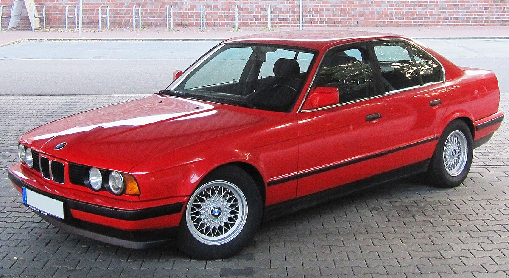
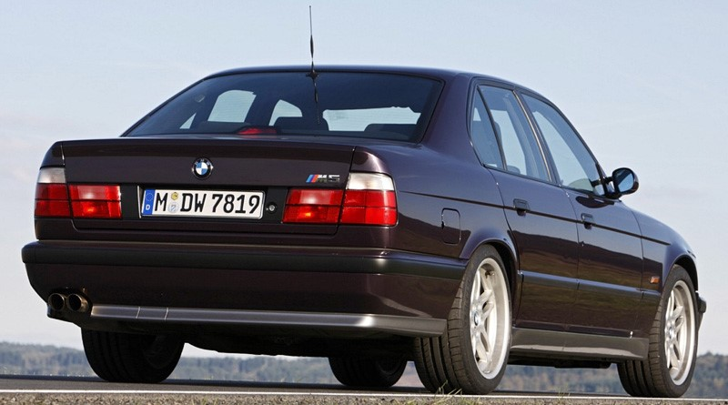
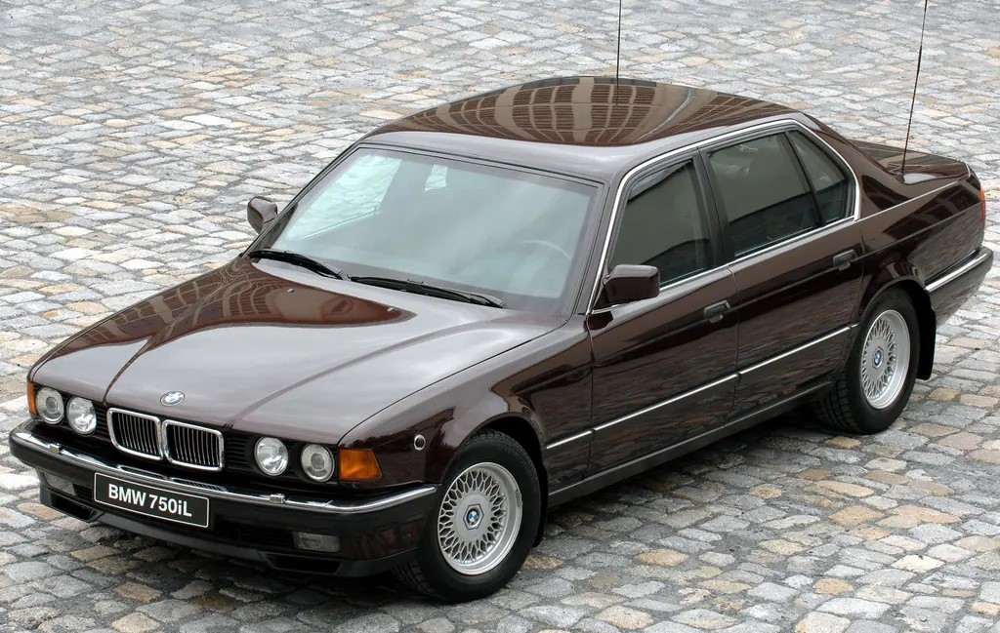
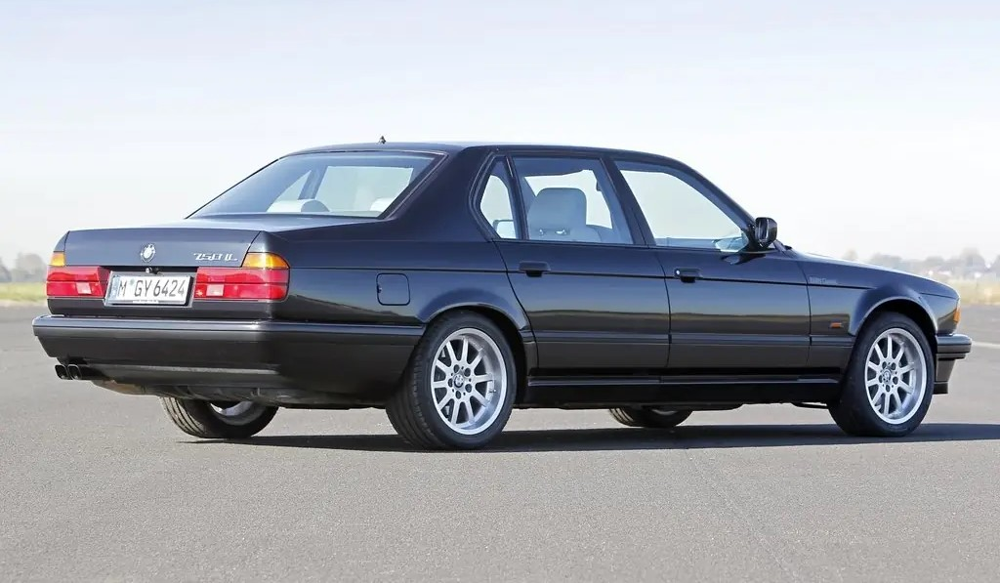

BMW 3 Series (e36) (1990-1997)


БМВ Е36 – це легендарна модель німецького автовиробника BMW, яка була випущена у 1990 році та вироблялася до 1999 року. Ця модель стала третім поколінням серії 3 та стала справжнім проривом для компанії. БМВ Е36 стала популярною не тільки завдяки своєму стильному дизайну та високій якості виконання, але і завдяки своїм спортивним характеристикам.
Однією з головних особливостей БМВ Е36 є її динамічність. Автомобіль оснащений потужними двигунами, які дозволяють йому розвивати вражаючу швидкість. Завдяки цьому БМВ Е36 стала дуже популярною серед любителів швидкості та спортивного стилю водіння.
Крім того, БМВ Е36 має чудову керованість та відмінні гальмівні системи, що робить її ідеальним автомобілем для активного водіння. Завдяки своїй спортивній природі та надійності, БМВ Е36 стала улюбленицею автолюбителів зі всього світу. Ця модель стала справжньою іконою у світі автомобільного дизайну та інженерії.
BMW 5 Series (e34) (1986—1995)
 У січні 1988 року фірма почала виробництво сімейства Е34. Кузов став більш обтічним, з'явилися вертикальні показники повороту, протитуманні фари під бампером (колісна база 2760 мм, завдовжки 4720, ширина 1750, висота 1410 мм; колія спереду 1465, ззаду — 1485 мм). Автомобілі нового сімейства стали віхою в історії фірми: чудова якість збирання, обробки, комфортабельність їзди завдяки відмінному налаштуванню ходової частини, зразкові системи обігріву та вентиляції, бездоганне виконання салону, високі динамічні характеристики, стабільний прямолінійний вибіг, ефективні гальма, високий рівень активної і пасивної безпеки — все говорить про високий рівень конструкторів, які вивели компанію BMW в число світових лідерів. Седани 5-й серії (кузов Е34) за якістю збирання і комфортності цілком можна поставити на один щабель з розкішними BMW 7-ї серії.
Просторий салон більше орієнтований для зручності водія: панель чорного кольору, що світиться в темряві оранжевим підсвічуванням, розгорнута в його бік, п'ять електроналаштувань водійського сидіння, простора посадка саме на передніх сидіннях, а також відмінна ергономіка органів управління — всі потрібні водієві важелі і важелі є там, де і чекаєш, а «бублик» як за формою, так і за можливістю регулювання кута нахилу сам проситься до рук
Відмінна оглядовість, в міру м'яка і безшумна підвіска не викликає у пасажирів неприємних відчуттів при будь-якій якості дороги. Безшумність при їзді — фірмова риса автомобілів BMW. Безшумна, навіть при інтенсивній експлуатації, обробка салону (хіба що шкіра сидінь злегка поскрипує), двигун звучить приглушено навіть на високих обертах. Багажний відсік об'ємом 460 л, в кришці якого акуратно розміщений досить повний комплект інструмента, — для багатьох у ті роки настільки повна штатна комплектація стала несподіванкою. Зате всі інші доповнення (крім, зрозуміло, АБС фірми Bosch і подушки безпеки для водія) пропонуються тільки в опціях. Гідропідсилювач керма розвиває повну потужність при маневруванні, а зі зростанням швидкості зменшує свою дію для підвищення точності зворотного зв'язку. Гальма просто зразкові — з потужним уповільненням, ідеальною інформативністю, м'яко і точно працює АБС.
BMW 7 Series (e32) (1986-1994)
 BMW 7 Series E32 — второе поколение BMW 7-й серии. Автомобиль был представлен в сентябре 1986 года. Модель продемонстрировала все достижения BMW и задала новый курс для остальных производителей машин класса F. Первой автолюбителям была предложена «семёрка» с 3.4-литровым 6-цилиндровым двигателем M30, который выдавал 218 л. с. (211 л. с. с каталитическим нейтрализатором). В этом же году появилась и удлинённая на 114 мм версия 735iL. Машина сильно отличалась от предшественницы. Приборы стали более удобными, панель приборов более эргономична. Отделка салона и культура производства были выведены на принципиально новый уровень.
1987 году были представлены версии 730i, 750i и 750iL. Машины с двигателями M30 3 и 3.4 литра комплектовались 4-ступенчатыми автоматическими трансмиссиями с ручным переключением передач. На машины с двигателем M70, который имел схему V12 ставили только трансмиссию с электрогидравлическим управлением. Версия 750i/iL стала первым БМВ на который установили электронный ограничитель скорости в 250 км/ч.
Подвеска и рулевое управление не претерпела радикальных изменений по сравнению с таковой на 5-series в кузове Е28. Принципиально другими стали лишь опоры амортизаторов и способ крепления к заднему подрамнику редуктора (который мог быть как со свободным так и с самоблокирующимся дифференциалом), который теперь имел сайлентблок и ШРУС спереди. Подвеска полностью независимая и спереди и сзади. Спереди классическая двухрычажная от БМВ со стабилизатором поперечной устойчивости, сзади независимая на диагональных рычагах с плавающими сайлентблоками и стабилизатором. Рулевое — рулевой редуктор и рулевая трапеция, как стандартного типа, так и с системой Servotronic — делающим руль почти невесомым на минимальных скоростях, облегчая парковку. Рулевая колонка регулировалась как механически по вылету, так и электрически либо только по вылету, либо и по вылету, и по наклону.